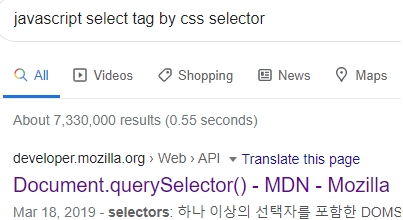
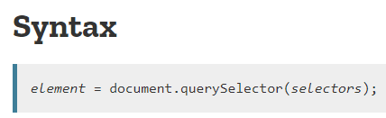
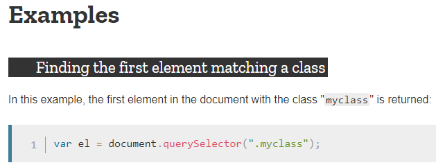
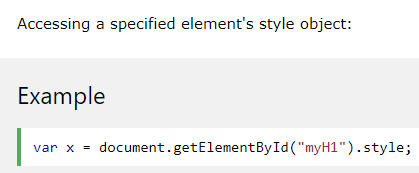
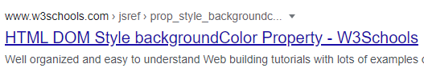
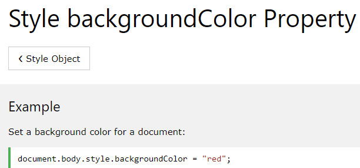
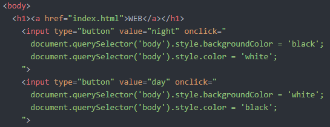

JavaScript - 웹브라우저 제어
JavaScript로 Night/Day 모드 버튼 만들기
CSS를 이용해서 배경색을 검은색으로, 글자색을 흰색으로 바꾸려면
다음과 같이 하면 된다.
body style="background-color:black;color:white"
※ style 속성의 속성값으로는 반드시 CSS가 온다.
이것이 Night 버튼을 눌렀을때 JavaScript로 작동되게 하려면 어떻게 해야 될까?
※ Night01.html에서 시작한다.
(1) Night 버튼을 만든다.
input type="button" value="Night" onclick="여기에 JS 코드를 넣는다."
(2) JavaScript를 이용해서 내가 제어하고 싶은 태그인 body태그를 선택하는 방법을 알아본다.

검색어: JavaScript select tag Sby css selector로 검색해서 Mozilla 페이지에 들어갔다.


문법과 예제를 보니
document.querySelector(선택자)라고 쓰면 되는 것을 알 수 있다.
※ query: 질의하다 (웹브라우저에게 질의한다.)
선택자에 대해서는 CSS - 속성과 선택자 페이지를 참고한다.
※ a 태그에서 새창으로 열기: target=_blank 추가
우리는 body 태그를 선택할 것이므로
tag 선택자, class 선택자, id 선택자 중에서
tag 선택자를 사용한다.
→ document.querySelector('body')
(3) 선택한 body 태그에서 우리가 바꾸고 싶은 것은
style이라는 속성(property)의 속성값(value)이므로,
JavaScript로 태그의 style이라는 속성을 바꾸는 방법을 검색해본다.
검색어: JavaScript element style

※ getElementById는 querySelector의 대체재로, 똑같은 것이라고 보면 된다.
예제를 보니 뒤에 .style을 붙이면 style 속성을 바꿀 수 있는 것을 알 수 있다.
(4) body 태그의 style 속성 중에서
배경화면 색상을 바꾸는 방법을 알아본다.
검색어: JavaScript style background-color


예제를 보니 뒤에 .backgroundColor를 추가하고
= "속성값"을 써주면 되는 것을 알 수 있다.
※ CSS에서는 background-color(하이픈이 있고, c가 소문자)이다.
이것을 바꿔서 쓰면 동작하지 않으므로 잘 체크한다.
document.querySelector('body').style.backgroundColor = 'black';
라고 입력해주고, 글자색을 바꾸기 위해서 다음도 입력해준다.
document.querySelector('body').style.color = 'white';
※ color의 c는 소문자다.
* 검사 - 개발자 도구에서 Elements(=Tags)탭을 띄워놓은 상태에서
night/day 버튼을 클릭하면 body 태그가 바뀌는 것을 볼 수 있다.
(5) 같은 방식으로 Day 버튼도 만들어준다.

(6) Night02.html로 저장했다.